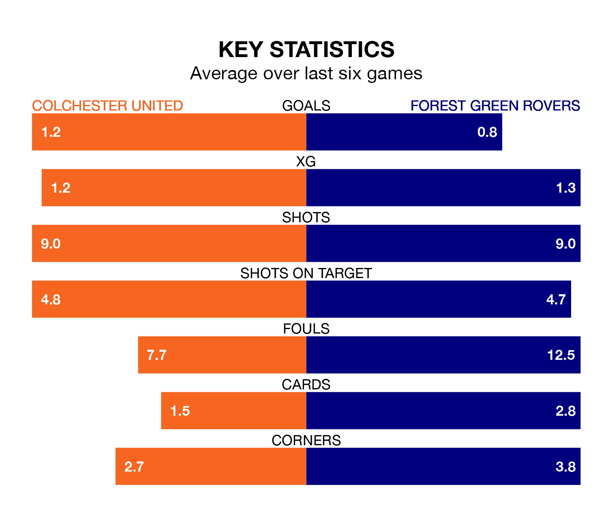

Struggling Colchester United face Forest Green Rovers at the JobServe Community Stadium on Saturday looking to build on a win in their last league outing.
After securing all three points with a 1-0 victory over Morecambe on January 27, the U's sit 21st in EFL League Two.
They travel to play a Forest Green side 24th in the standings, who lost in their last match, 1-0 against Accrington Stanley.
Colchester are in disappointing form in EFL League Two, with one win and two draws from their last six games.
With no wins and three draws over that period, Forest Green's form is slightly worse – they have taken three points from 18, compared to United's five.
In the last 10 years, Colchester and Forest Green have played each other on 10 occasions. Colchester won four of them and Forest Green six.
On average, the U's scored 0.9 goals and the Green 1.7 in those matches.
Their last meeting was on October 14, when Forest Green won 5-0 at home.
With 27 goals in 28 games so far this season, Rovers are the league's second-lowest scorers with 1.0 goals per game. And they are conceding more than average, letting in 50 goals at a rate of 1.8 per game.
The U's are also below average scorers, with 1.3 goals per game, compared to a league average of 1.5. They have conceded 1.9 goals per game.
Updated: 10:03 (UTC), 30/01/24